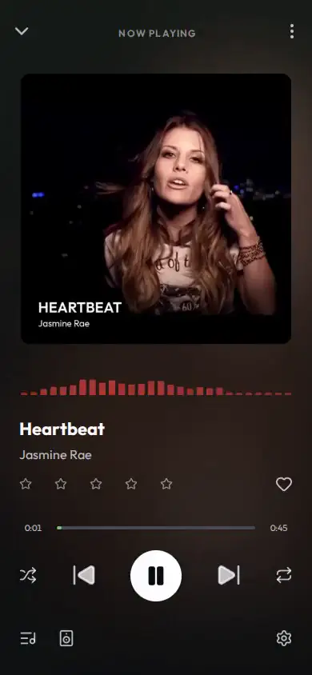
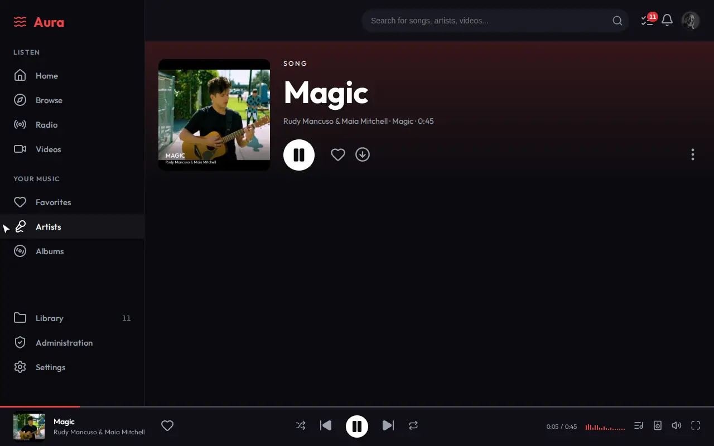

Play on any device
Start on the laptop, carry on from your phone or the TV.

Your own music and videos on the web, Android and desktop, from a server you run. Control one device from another, and play videos as music with the screen off. No ad breaks 😉
Free and open source · no account with us · no ads


Start on the laptop, carry on from your phone or the TV.

Put on a music video, pocket your phone, keep listening.
Messy titles and tags get cleaned up for you. You just say yes or no.
An aurora that moves with the song, or the words floating in a cloud.
And more: bars, a ring, a waveform.
Your favorite songs go with you, even with no signal.
Ask for “songs for a sunny morning drive” and get them.
Your year in music, and it never leaves your server.
Any browser. Install it as an app.
Downloads for offline, lock-screen controls.
Linux and Windows.
Docker, a .deb or one binary.
One command with Docker · runs on a mini PC or NAS · about 150 MB of RAM
Latest release: 0.15.0-alpha.28, 13 November 2026 · Download
git clone https://github.com/brhn-me/aura && cd auraMUSIC_DIR=/path/to/music docker compose up -d --buildGo to localhost:7780 and create your account.
No Docker? A Linux binary or .deb is in each release.
Get aura-<version>.apk from Download and open it. Allow installing from your browser when Android asks.
A server: enter your server's address and sign in. This phone: play the music already on the phone.
Android 9 or newer. More in the guide
Linux: the .deb (sudo apt install ./aura-desktop_<version>_amd64.deb) or the AppImage. Windows: run the setup .exe.
A server: connect to yours. On Linux, This computer plays a folder on the computer itself.
Files on Download. More in the guide
Your music stays on your server.Free and open source. No account with us, no subscription, no ads. Online lookups are yours to switch off.
What a server sends out, and how to turn it off